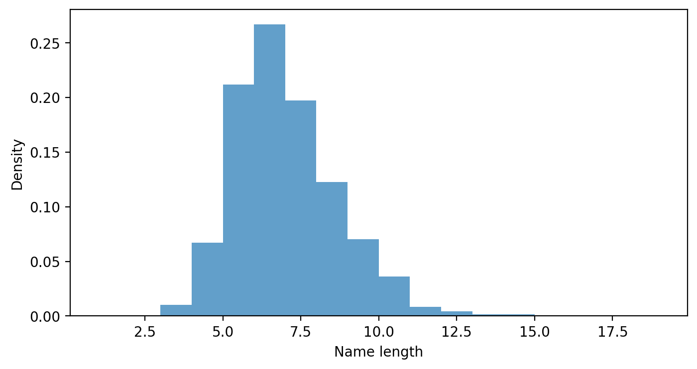
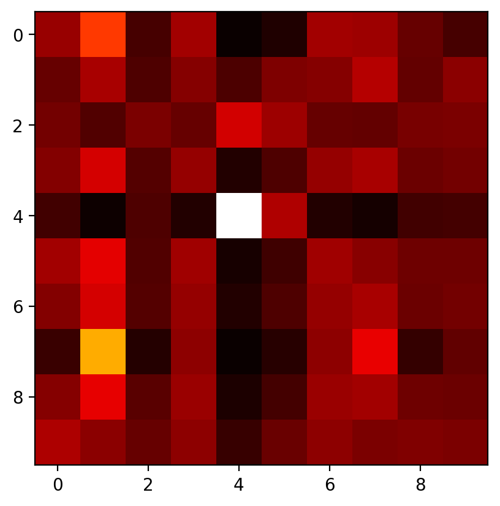

import numpy as np
import matplotlib.pyplot as plt
%matplotlib inline
%config InlineBackend.figure_format = 'retina'
import torch
import torch.nn as nn
import torch.nn.functional as F
from einops import rearrange, reduce, repeat!wget https://raw.githubusercontent.com/MASTREX/List-of-Indian-Names/master/2.%20First.txt -O names-indian.txt--2024-05-30 09:41:48-- https://raw.githubusercontent.com/MASTREX/List-of-Indian-Names/master/2.%20First.txt
Resolving raw.githubusercontent.com (raw.githubusercontent.com)... 185.199.111.133, 185.199.110.133, 185.199.108.133, ...
Connecting to raw.githubusercontent.com (raw.githubusercontent.com)|185.199.111.133|:443... connected.
HTTP request sent, awaiting response... 200 OK
Length: 8752 (8.5K) [text/plain]
Saving to: ‘names-indian.txt’
names-indian.txt 100%[===================>] 8.55K --.-KB/s in 0s
2024-05-30 09:41:49 (33.8 MB/s) - ‘names-indian.txt’ saved [8752/8752]
import pandas as pd
pd.read_csv('names-indian.txt', header=None)| 0 | |
|---|---|
| 0 | Abhishek |
| 1 | Aman |
| 2 | Harsh |
| 3 | Ayush |
| 4 | Aditi |
| ... | ... |
| 1160 | Prasoon |
| 1161 | Madhusudan |
| 1162 | Prastuti |
| 1163 | Rampratap |
| 1164 | Madhukar |
1165 rows × 1 columns
# convert all names to lowercase
names = pd.read_csv('names-indian.txt', header=None)[0].str.lower().valuesnamesarray(['abhishek', 'aman', 'harsh', ..., 'prastuti', 'rampratap',
'madhukar'], dtype=object)# KDE plot of name lengths
plt.figure(figsize=(8, 4))
plt.hist([len(name) for name in names], bins=range(1, 20), density=True, alpha=0.7)
plt.xlabel('Name length')
plt.ylabel('Density')Text(0, 0.5, 'Density')
# Attach START and END tokens to each name. Need to add these two to the vocabulary.
start_symbol = '^'
end_symbol = '$'
names = [start_symbol + name + end_symbol for name in names]
names[:5]['^abhishek$', '^aman$', '^harsh$', '^ayush$', '^aditi$']# Find unique characters in the dataset
vocab = set(''.join(names))
vocab = sorted(vocab)
print(vocab, len(vocab))['$', '^', 'a', 'b', 'c', 'd', 'e', 'f', 'g', 'h', 'i', 'j', 'k', 'l', 'm', 'n', 'o', 'p', 'q', 'r', 's', 't', 'u', 'v', 'w', 'x', 'y', 'z'] 28# Create a d dimensional lookup table for each character in the vocabulary
class CharTable:
def __init__(self, vocab):
self.vocab = vocab
self.char2index = {c: i for i, c in enumerate(vocab)}
self.index2char = {i: c for i, c in enumerate(vocab)}
self.vocab_size = len(vocab)
def encode(self, name):
return torch.tensor([self.char2index[c] for c in name])
def decode(self, tensor):
if type(tensor) == torch.Tensor:
tensor = tensor.cpu().numpy()
return ''.join([self.index2char[i] for i in tensor])ct = CharTable(vocab)Let us process the first name in the dataset
# create embedding layer
class CharEmbedding(nn.Module):
def __init__(self, vocab_size, embed_size):
super(CharEmbedding, self).__init__()
self.embedding = nn.Embedding(vocab_size, embed_size)
def forward(self, x):
return self.embedding(x)
embedding_dim = 8
char_embedding = CharEmbedding(ct.vocab_size, embedding_dim )name = names[0]
encoding = ct.encode(name)
print(name, encoding, ct.decode(encoding), char_embedding(encoding))^abhishek$ tensor([ 1, 2, 3, 9, 10, 20, 9, 6, 12, 0]) ^abhishek$ tensor([[-1.3499, -0.8886, -0.6833, -2.4340, -0.3476, -0.2824, 0.3694, -1.2859],
[ 0.6961, -0.3760, -1.1183, 2.2782, -1.3446, 0.2088, 0.4919, -0.1777],
[-0.3584, 0.3688, 0.3429, 0.2168, 2.0347, -1.5288, -0.4697, -0.3612],
[-1.5195, 2.0605, 0.2935, 0.0287, 0.2705, -1.4502, -0.6650, 0.3143],
[-0.6630, 0.0302, 0.4576, 0.3651, -1.6005, -0.5861, -1.9137, -0.4006],
[ 0.0552, 0.1175, 1.7384, 0.0691, 1.1881, 0.1506, -0.3215, 2.6402],
[-1.5195, 2.0605, 0.2935, 0.0287, 0.2705, -1.4502, -0.6650, 0.3143],
[-0.1919, 1.4137, 0.0158, -0.0030, -0.6109, 0.4661, -0.1131, 0.2733],
[ 0.8686, 0.3222, -0.2661, 2.1850, -1.3195, -0.6661, 0.8780, 0.2122],
[ 0.6729, 0.4587, -0.3165, 1.4831, 0.1030, -1.4689, 0.4894, 1.2956]],
grad_fn=<EmbeddingBackward0>)print(char_embedding(encoding).shape)torch.Size([10, 8])xs=[]
for i in range(len(name)):
xs.append(char_embedding(ct.encode(name[i])))length_name = len(name)d = 4
val_linear = nn.Linear(embedding_dim, embedding_dim)
query_linear = nn.Linear(embedding_dim, d)
key_linear = nn.Linear(embedding_dim, d)vs = []
for i in range(length_name):
vs.append(val_linear(xs[i]))vs[tensor([[-0.5005, 1.1128, 0.8048, 0.3994, 0.8465, -1.2007, -0.3687, 0.2159]],
grad_fn=<AddmmBackward0>),
tensor([[-0.2514, -0.1905, -0.5204, 0.0249, -0.1457, 0.2114, 0.3625, 0.5944]],
grad_fn=<AddmmBackward0>),
tensor([[ 0.2653, -0.4796, -0.9962, 0.3799, 0.1251, 0.3504, 0.2554, -0.4853]],
grad_fn=<AddmmBackward0>),
tensor([[ 0.1296, -0.0862, -0.9042, -0.4130, -0.2025, -0.7218, 0.4927, -0.0048]],
grad_fn=<AddmmBackward0>),
tensor([[-1.1825, 0.4473, -0.7623, -0.5004, -0.6020, -0.9123, -0.4412, 0.3128]],
grad_fn=<AddmmBackward0>),
tensor([[ 0.5342, -0.9138, -0.6400, -0.0377, -0.0354, 0.3041, -1.2578, 0.3234]],
grad_fn=<AddmmBackward0>),
tensor([[ 0.1296, -0.0862, -0.9042, -0.4130, -0.2025, -0.7218, 0.4927, -0.0048]],
grad_fn=<AddmmBackward0>),
tensor([[-0.0751, -0.1357, -0.5498, -0.0227, 0.0025, -0.0453, -0.2706, -0.0690]],
grad_fn=<AddmmBackward0>),
tensor([[ 0.1425, -0.2478, -0.5700, -0.0055, -0.2560, 0.2981, 0.7119, 0.5840]],
grad_fn=<AddmmBackward0>),
tensor([[ 0.9592, -0.7415, -0.7288, -0.1082, 0.1099, -0.0595, 0.4140, 0.6418]],
grad_fn=<AddmmBackward0>)]qs = []
for i in range(length_name):
qs.append(query_linear(xs[i]))
ks = []
for i in range(length_name):
ks.append(key_linear(xs[i]))
qs[tensor([[-0.5431, -0.8826, -2.0655, 0.3620]], grad_fn=<AddmmBackward0>),
tensor([[ 0.2952, -0.6107, -0.4607, 1.6180]], grad_fn=<AddmmBackward0>),
tensor([[0.3232, 0.1415, 0.1938, 0.1639]], grad_fn=<AddmmBackward0>),
tensor([[-0.0149, -0.6881, -0.9877, 0.9795]], grad_fn=<AddmmBackward0>),
tensor([[ 1.0182, 0.6256, 1.4679, -0.5539]], grad_fn=<AddmmBackward0>),
tensor([[-0.2207, -0.9287, -0.9676, 0.4366]], grad_fn=<AddmmBackward0>),
tensor([[-0.0149, -0.6881, -0.9877, 0.9795]], grad_fn=<AddmmBackward0>),
tensor([[-0.6503, -1.5170, -0.6902, 1.8153]], grad_fn=<AddmmBackward0>),
tensor([[-0.2690, -0.6013, -0.9059, 0.4749]], grad_fn=<AddmmBackward0>),
tensor([[ 0.2936, -0.5395, -0.8663, 0.6923]], grad_fn=<AddmmBackward0>)]ks[tensor([[-0.0686, -0.6523, -0.3398, -0.2891]], grad_fn=<AddmmBackward0>),
tensor([[-1.8098, -0.3927, -0.2086, 0.4891]], grad_fn=<AddmmBackward0>),
tensor([[-0.5030, 0.1248, -0.1280, -0.0116]], grad_fn=<AddmmBackward0>),
tensor([[-0.9497, -0.3944, -0.1638, 0.1935]], grad_fn=<AddmmBackward0>),
tensor([[0.2378, 0.7928, 0.6968, 0.3017]], grad_fn=<AddmmBackward0>),
tensor([[-0.0548, 0.0063, 0.2924, 0.2715]], grad_fn=<AddmmBackward0>),
tensor([[-0.9497, -0.3944, -0.1638, 0.1935]], grad_fn=<AddmmBackward0>),
tensor([[-1.5675, 0.1323, -0.1190, 0.7133]], grad_fn=<AddmmBackward0>),
tensor([[-0.4218, -0.1489, -0.2049, -0.0142]], grad_fn=<AddmmBackward0>),
tensor([[-0.5909, -0.3664, 0.1543, 0.2502]], grad_fn=<AddmmBackward0>)]attns = torch.zeros(length_name, length_name)
for i in range(length_name):
for j in range(length_name):
attns[i, j] = torch.matmul(qs[i], ks[j].T)attnstensor([[ 1.2102, 1.9374, 0.4234, 1.2723, -2.1590, -0.4814, 1.2723, 1.2385,
0.7785, 0.4162],
[ 0.0670, 0.5930, -0.1845, 0.3490, -0.2468, 0.2845, 0.3490, 0.6654,
0.0378, 0.3831],
[-0.2277, -0.6008, -0.1716, -0.3628, 0.3736, 0.0843, -0.3628, -0.3941,
-0.1994, -0.1719],
[ 0.5024, 0.9822, 0.0367, 0.6368, -0.9418, -0.0264, 0.6368, 0.7484,
0.2971, 0.3536],
[-0.8166, -2.6654, -0.6156, -1.5613, 1.5939, 0.2270, -1.5613, -2.0829,
-0.8154, -0.7429],
[ 0.8236, 1.1794, 0.1140, 0.8188, -1.3313, -0.1581, 0.8188, 0.6496,
0.4234, 0.4306],
[ 0.5024, 0.9822, 0.0367, 0.6368, -0.9418, -0.0264, 0.6368, 0.7484,
0.2971, 0.3536],
[ 0.7440, 2.8044, 0.2052, 1.6802, -1.2906, 0.3171, 1.6802, 2.1955,
0.6157, 1.2878],
[ 0.5812, 1.1442, 0.1708, 0.7329, -1.0286, -0.1250, 0.7329, 0.7886,
0.3818, 0.3583],
[ 0.4260, 0.1997, -0.1121, 0.2098, -0.7526, -0.0848, 0.2098, 0.0653,
0.1241, 0.0637]], grad_fn=<CopySlices>)# applt softmax to get attention weights
attns = F.softmax(attns, dim=-1)
attnstensor([[0.1023, 0.1169, 0.0955, 0.1031, 0.0907, 0.0924, 0.1031, 0.1026, 0.0979,
0.0955],
[0.0981, 0.1038, 0.0964, 0.1008, 0.0960, 0.1001, 0.1008, 0.1049, 0.0979,
0.1012],
[0.0994, 0.0965, 0.0999, 0.0982, 0.1074, 0.1029, 0.0982, 0.0980, 0.0996,
0.0999],
[0.1007, 0.1075, 0.0967, 0.1022, 0.0927, 0.0963, 0.1022, 0.1037, 0.0987,
0.0992],
[0.0938, 0.0899, 0.0949, 0.0914, 0.1571, 0.1030, 0.0914, 0.0905, 0.0938,
0.0942],
[0.1031, 0.1091, 0.0964, 0.1031, 0.0918, 0.0950, 0.1031, 0.1010, 0.0987,
0.0988],
[0.1007, 0.1075, 0.0967, 0.1022, 0.0927, 0.0963, 0.1022, 0.1037, 0.0987,
0.0992],
[0.0942, 0.1282, 0.0924, 0.1010, 0.0905, 0.0927, 0.1010, 0.1091, 0.0937,
0.0973],
[0.1007, 0.1092, 0.0971, 0.1025, 0.0924, 0.0953, 0.1025, 0.1032, 0.0987,
0.0985],
[0.1043, 0.1013, 0.0983, 0.1014, 0.0945, 0.0985, 0.1014, 0.0999, 0.1005,
0.0999]], grad_fn=<SoftmaxBackward0>)plt.imshow(attns.detach().numpy(), cmap='hot', interpolation='nearest')
df = pd.DataFrame(attns.detach().numpy())
df| 0 | 1 | 2 | 3 | 4 | 5 | 6 | 7 | 8 | 9 | |
|---|---|---|---|---|---|---|---|---|---|---|
| 0 | 0.102279 | 0.116902 | 0.095548 | 0.103101 | 0.090652 | 0.092365 | 0.103101 | 0.102647 | 0.097894 | 0.095509 |
| 1 | 0.098137 | 0.103838 | 0.096373 | 0.100781 | 0.096004 | 0.100102 | 0.100781 | 0.104920 | 0.097907 | 0.101158 |
| 2 | 0.099379 | 0.096506 | 0.099920 | 0.098203 | 0.107403 | 0.102867 | 0.098203 | 0.097955 | 0.099648 | 0.099917 |
| 3 | 0.100661 | 0.107542 | 0.096716 | 0.102229 | 0.092731 | 0.096318 | 0.102229 | 0.103722 | 0.098675 | 0.099177 |
| 4 | 0.093831 | 0.089897 | 0.094899 | 0.091359 | 0.157125 | 0.103029 | 0.091359 | 0.090467 | 0.093837 | 0.094197 |
| 5 | 0.103120 | 0.109096 | 0.096438 | 0.103056 | 0.091776 | 0.094960 | 0.103056 | 0.100971 | 0.098732 | 0.098796 |
| 6 | 0.100661 | 0.107542 | 0.096716 | 0.102229 | 0.092731 | 0.096318 | 0.102229 | 0.103722 | 0.098675 | 0.099177 |
| 7 | 0.094160 | 0.128211 | 0.092408 | 0.100973 | 0.090542 | 0.092696 | 0.100973 | 0.109109 | 0.093650 | 0.097276 |
| 8 | 0.100667 | 0.109200 | 0.097085 | 0.102458 | 0.092360 | 0.095326 | 0.102458 | 0.103196 | 0.098727 | 0.098525 |
| 9 | 0.104278 | 0.101318 | 0.098286 | 0.101434 | 0.094502 | 0.098512 | 0.101434 | 0.099883 | 0.100485 | 0.099867 |
df.sum(axis=1)0 1.0
1 1.0
2 1.0
3 1.0
4 1.0
5 1.0
6 1.0
7 1.0
8 1.0
9 1.0
dtype: float32updated_embedding_1.shapetorch.Size([10, 10, 8])vs[0].shapetorch.Size([1, 8])